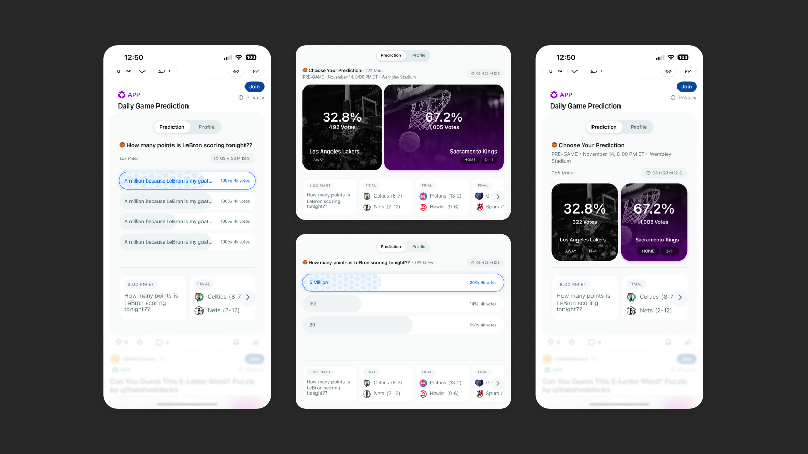
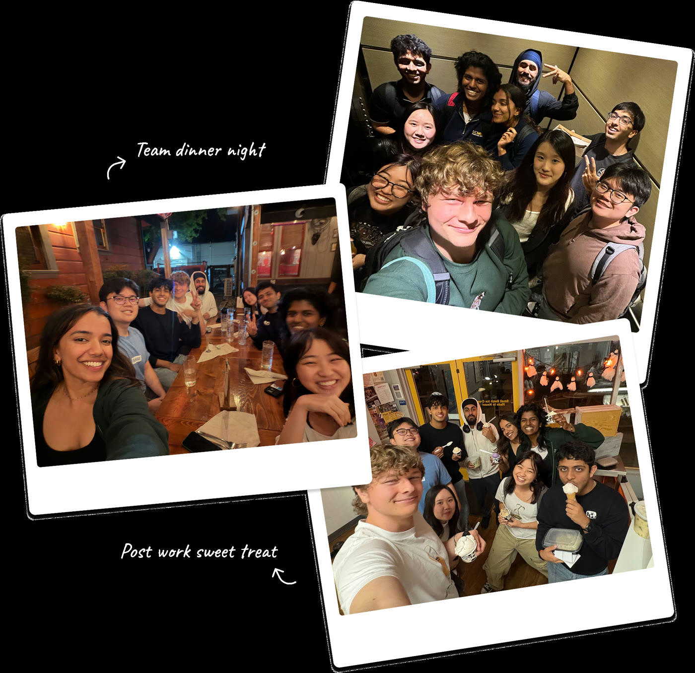

Project brief
Building a fun, low-stakes prediction experience for NBA fans
Reddit briefed our team to build a lightweight prediction experience, not a betting app, for NBA subreddits—something that could turn passive scrolling into active participation without becoming a full betting product. The brief set four goals: drive engagement in sports communities, keep predictions fun and low-stakes, surface how community sentiment leaned on upcoming games, and hold up under the concurrent traffic real NBA games bring. The focus within that brief was the systems side, giving moderators a way to run it and giving users a way to keep their own track record.
Solution
A prediction game built right into the subreddit
For fans
One tap to vote
The team kept the vote itself as low-friction as scrolling, since anything heavier would compete with how people already move through Reddit.
Every matchup in one place
Users can browse the full day's NBA lineup without waiting on a single post to show up in their feed, so predicting isn't limited to whatever the algorithm surfaces first.

Watch the community lean
Percentages update as votes come in because a static poll doesn't hold attention. Watching the community lean one way in real time is what turns a single tap into something worth checking back on.
For moderators
One moderator dashboard, every poll
NBA runs games almost every day, so the dashboard had to handle constant turnover. Live, Scheduled, and Archived became separate views so mods aren't hunting through one long list to find what's active right now.
Posting a poll in seconds
Mods are often working live during a game, not sitting down to plan ahead. Poll creation stays at a few taps so a mod could post a custom question mid-thread without breaking their flow.
Looking back
Reflection
- Building one cohesive system One that actually feels like part of Reddit, not bolted on. Everything had to nest into everything else too. The dashboard and the profile only work because they're built to respect each other's logic, not because they were designed in isolation.
- Designing within Devvit's constraints This changed the thinking, not just what could ship. A small widget space and limited interactions (no free scrolling the way a normal page allows) ruled out the usual go-to patterns. Working within that forced simpler, more intentional decisions.
- More confirmation states Something like a small success moment when you post a poll (a toast, a bit of motion, maybe even confetti) so the action feels acknowledged instead of just silently going through.
